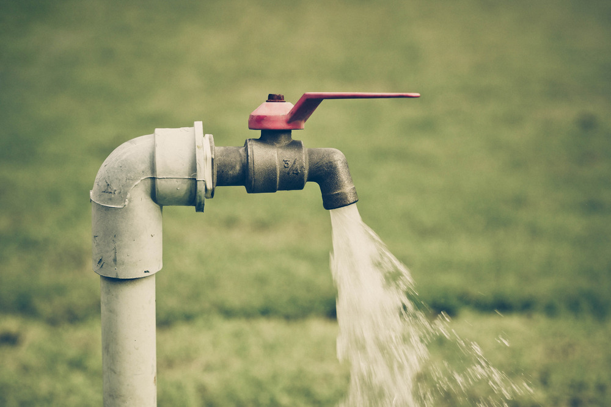
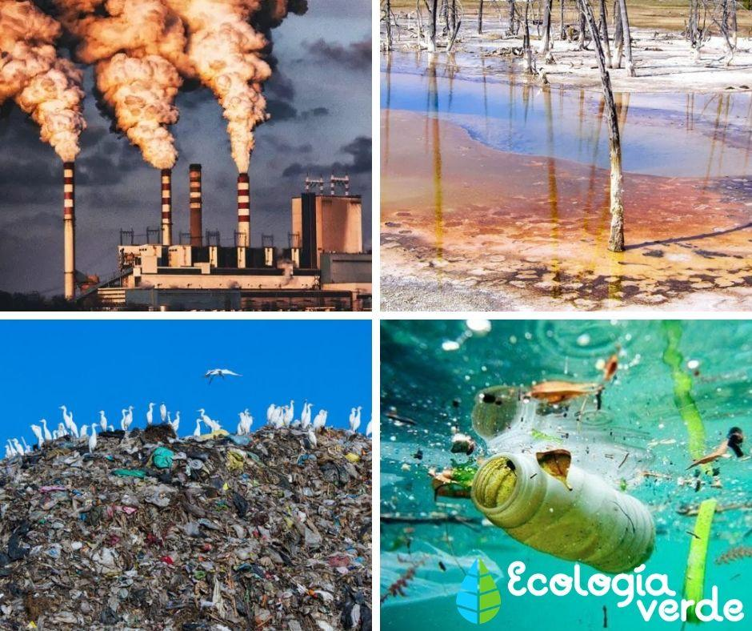

¿Qué es el desperdicio del agua?, podemos decir en pocas palabras, que se considera como desperdicio del agua a todas las acciones que llevan a un mal uso o un malgasto del vital líquido. Algunas son de competencia personal, otras de competencia industrial y gubernamental.
Podemos hablar de contaminación cuando en un entorno ingresan elementos o sustancias que normalmente no deberían estar en él y que afectan el equilibrio del ecosistema. Las sustancia nocivas son lo que llamamos contaminantes ambientales, pudiendo tener diferente origen.
Bueno pues porque esta es una de las comunidades que yo encuentro que no tiene mucha higiene y desperdician demasiada agua y no cuidan su propia comunidad.
Haciendo esta página web creo que puedo ayudar a esta comunidad de manera favorable, para que tomen consciencia.